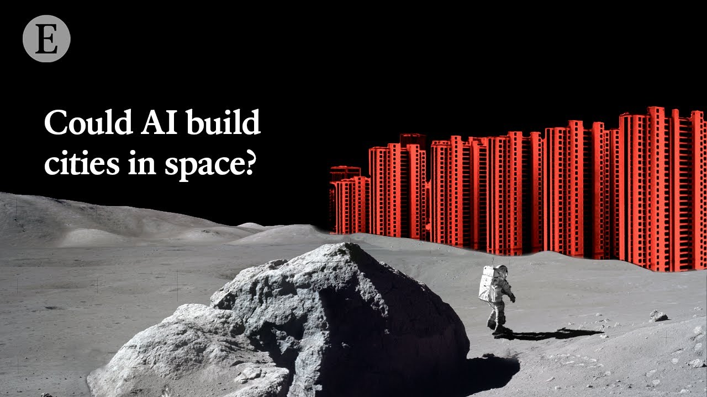

【经济学人：AI能在太空中建造城市吗？】
Summary: The future may see humans living in space, with AI-guided robots enabling the construction of satellites, spacecraft, and even lunar and Martian cities. Companies like Machina Labs and Relativity Space are pioneering advanced manufacturing techniques, while NASA supports lunar infrastructure projects. Despite challenges like communication delays and harsh conditions, AI-driven robotics could revolutionize space exploration and industry.
摘要： 未来人类可能生活在太空中，AI驱动的机器人将助力建造卫星、航天器甚至月球和火星城市。Machina Labs和Relativity Space等公司正研发先进制造技术，NASA也支持月球基建项目。尽管面临通信延迟和恶劣环境等挑战，AI机器人可能彻底改变太空探索与工业。

⏱️ Estimated Reading Time: 9 min
📚 四级生词 📚 六级生词 📚 雅思生词 📚 托福生词 📚 专八生词 📚 SAT生词 📚 考研生词 📚 GRE生词 📚 高考生词 📚 其它生词生词
Fast forward into the future, when humans are regularly visiting and even living in space.
展望未来，人类将频繁访问甚至常驻太空。
There’s a whole new economy, where things are made and assembled in space, from huge satellites and spacecraft in orbit to entire cities on the Moon and Mars.
全新的太空经济将诞生，从轨道上的巨型卫星、航天器到月球和火星的整座城市都在太空制造组装。
We are treading new ground here.
我们正在开拓新领域。
So what advances in technology could make building and manufacturing in space a reality?
哪些技术突破能让太空建造与制造成为现实？
The answer could be robots guided by AI.
答案或许是AI引导的机器人。
I think a lot of paradigms will change the moment we start manufacturing in space.
我认为太空制造将彻底改变许多范式。
Ed Mehr is co-founder of a company with ambitious plans to build the factory of the future in space.
Ed Mehr是一家公司的联合创始人，该公司计划在太空建造未来工厂。
AI and robotics is going to be a big part of that.
AI与机器人技术将是核心部分。
The ability to do this kind of building in space is decades away.
这种太空建造能力还需数十年实现。
But Machina Labs is drawing inspiration from the manufacturing process that it’s currently using here on Earth.
但Machina Labs正从地球现有制造工艺中汲取灵感。
We call these robotic cells robo-craftsmen.
我们称这些机器人单元为“机械工匠”。
The company specialises in a new way of shaping sheet metal called robo-forming.
该公司专精于名为“机器人成型”的金属板材塑造新技术。
Think of two robotic arms on two sides of a flat sheet of metal, working together like fingers of the potter, to deform a sheet of metal into very complex shapes.
想象两只机械臂在金属板两侧协作，像陶匠的手指般将金属板塑造成复杂形状。
They can pick up different tools, apply it differently to the material and replicate all kinds of different processes.
它们能切换工具、差异化加工材料并复现各类工艺。
The hope is that one day, a new generation of robots like these will be able to assemble and construct things in space.
希望未来这类新一代机器人能在太空中组装建造。
Welcome to our second facility.
欢迎来到我们的第二座工厂。
We call this facility Machina East.
我们称它为“Machina东方”。
We’re using this facility to manufacture our next generation, which is going to be portable.
这里正生产便携式下一代设备。
Not only we can deploy it anywhere on Earth, but the portable nature of it can be also put, eventually, on a rocket and deployed to space.
它不仅可在地球任意部署，最终还能通过火箭送入太空。
AI is crucial to robo-forming.
AI是机器人成型的关键。
With artificial intelligence now we can enter the realm where a robot can be flexible, can decide what to do and what not to do.
借助AI，机器人能灵活决策行动与否。
It can change the set of operations that it was planning to do, based on the inputs it’s getting from the environment.
它能根据环境反馈动态调整计划操作。
In the future AI-guided robots could enable numerous kinds of manufacturing to take place in space.
未来AI机器人将实现多种太空制造。
A number of private companies have grand ambitions.
多家私营企业怀揣雄心。
This company, Relativity Space, wants to 3D-print entire rockets on the surface of Mars, while another, Orbital Composites, is working on 3D-printing solar power stations in orbit to test out space-based solar power.
Relativity Space计划在火星3D打印整枚火箭，Orbital Composites则研发轨道3D打印太阳能电站。
It could take decades to launch some of these technologies.
部分技术或需数十年才能应用。
However, the world’s most well-known space agency is on board.
但全球知名航天机构已参与其中。
In addition to Artemis, an international effort for persistent presence on the Moon, which is really focused on getting the crew on the lunar surface, there are supporting missions to supply the materials, the robots, everything that we need to be able to build that infrastructure: habitat, landing pads, roads, power stations, when you think about building a small city on the Moon.
除“阿尔忒弥斯”月球驻留计划外，还有配套任务提供建材、机器人等基建所需——从栖息地、着陆台到道路与电站。
But the moon will also serve as a pathfinder, a testbed, a place for us to learn as we transit to Mars and seek a permanent presence there as well.
月球将成为通往火星的中继站与试验场。
Settling humans on Mars is a regular story in science fiction and many real people today, billionaires and beyond, have dreams to do it too.
火星殖民常见于科幻，如今亿万富豪等人群也梦想成真。
The sophisticated AI and robotics in development today could help to build infrastructure that would make those dreams a reality.
当今先进的AI与机器人技术将助力实现这些梦想。
We have not asked this much of our robotic systems ever before in the past.
我们对机器人系统的要求前所未有。
I think one of the earliest applications will probably be in monitoring.
最早的应用可能是监测领域。
So imagine you’ve got habitats even when humans aren’t there, 24 hours a day these need to run.
想象人类不在时，栖息地仍需全天候运转。
So you can imagine systems that are monitoring, doing fault detection, and maybe even prediction.
监测系统将进行故障检测甚至预测。
You could imagine even, think about how humans work, handing off objects from one to the other.
还能模拟人类传递物品的协作。
All of this will be done robotically with the intelligence, AI, that we need for this agency.
这些都需依靠AI驱动的机器人完成。
AI-guided robotics could be used to construct space hotels for tourists, manufacture semiconductors or drugs in microgravity and even mine asteroids.
AI机器人可建造太空酒店、在微重力下生产半导体/药物甚至开采小行星。
As futuristic as all this sounds AI and robotics are already being used in space.
尽管听起来科幻，AI与机器人已应用于太空。
Lift-off of the Delta rocket with Mars Pathfinder.
搭载“火星探路者”的德尔塔火箭发射升空。
NASA’s troop of Mars rovers has been trundling over the red planet since 1997.
自1997年起NASA火星车便开始探索这颗红色星球。
AI was used to pilot the unmanned Deep Space One after it was launched in 1998 to investigate an asteroid and comet, while free-floating robots, called Astrobee, help astronauts aboard the International Space Station with their routine duties.
1998年发射的“深空一号”无人探测器采用AI导航，而国际空间站的Astrobee自由漂浮机器人协助宇航员日常工作。
However, using AI and robotics to build in space presents plenty of challenges.
但太空建造面临诸多挑战。
The robots will need to withstand the harsh conditions of space and operate in different gravity to Earth and it won’t be easy to call out a mechanic if something goes wrong.
机器人需适应太空严酷环境与异于地球的重力，且故障时难以及时维修。
Mark Woods is a specialist in autonomous robotics and AI.
Mark Woods是自主机器人与AI专家。
I think the biggest challenge we have in terms of doing things in space, it’s just hard to get people up there if things go wrong.
最大挑战是故障时难派遣人员维修。
The second thing is, a lot of the communication we have with robots on planetary bodies is not in real time.
其次，与行星表面机器人的通信存在延迟。
So for example, it can take anything from three to 22 and a half minutes to get a signal from Earth to Mars.
地球与火星间信号传递需3至22.5分钟。
It’s just impossible to do what we might call teleoperation or joystick control of things.
实时遥控操作完全不现实。
That means that the robots that we have on Mars really have to have some element of agency and autonomy.
因此火星机器人必须具备自主决策能力。
The technological and financial hurdles involved in creating such systems are huge, but so too are the possible rewards.
相关系统研发的技术与资金门槛极高，但回报也可能巨大。
The Eagle has landed.
“鹰已着陆”。
The global space business could generate revenue of more than $1trn by 2040.
2040年全球太空产业收入或超1万亿美元。
Enhancing the capability to manufacture in space and to build cities there could bring economic benefits to humans.
提升太空制造与城建能力将带来经济效益。
Perhaps more significantly, it could help develop humans’ understanding of their place in the universe.
更重要的是，它将深化人类对宇宙地位的认知。
Exploration is part of our nature.
探索是我们的天性。
I don’t think we’re going to sit idly on Earth and just send robots.
人类不会仅在地球旁观机器人探索。
I hope that as humans we can also go there and experience those outer worlds to become a multi-planetary species.
我希望人类能亲历外星世界，成为跨行星物种。
Hello, I’m Alok Jha science and technology editor at The Economist.
我是《经济学人》科技编辑Alok Jha。
If you’d like to read more about AI’s impact on science, then click on the link opposite.
欲了解AI对科学的影响，请点击右侧链接。
And if you’d like to watch more of our Now & Next series, click on the other link.
观看更多《当下与未来》系列，请点击另一链接。
Thanks for watching, and please don’t forget to subscribe.
感谢观看，别忘了订阅。